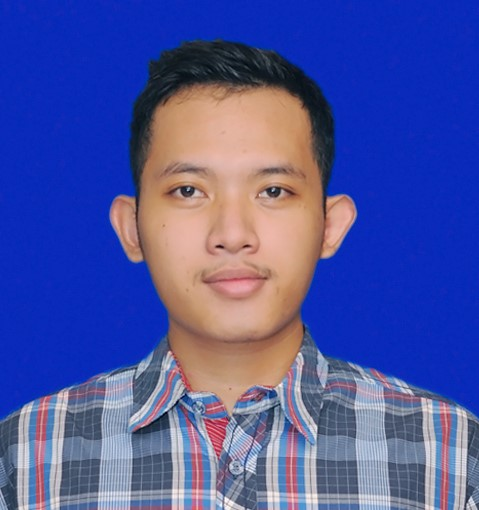

CURRICULUM VITAE Bilhaq Avi DewantaraDepok, Indonesia |
||
SUMMARYResult-driven Informatics Engineering sutdent from Sumatera Institute of Technology passionate on develop user-friendly software. Good problem-solving, fast learner, and ability to perform well in a team. - "Never Give Up, Fix Problems, Keep Going". |
||
|
||